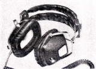
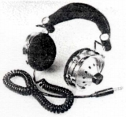
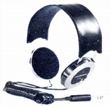
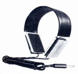
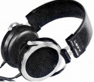

HOSIDEN（ホシデン）
1950年設立の星電器製造（現社名 ホシデン）のブランド。他社からのOEM受託によるヘッドフォン、マイクの製造を行ってきたメーカーだが、古くからヘッドフォンに携わってきたメーカーであり、国立科学博物館が運営する「産業技術史資料情報センター」のデータベースに収録されているのはこのメーカーのヘッドフォンである。現在では電子部品全般を扱い、音響関係の売上はサイト開設時（2009年）では一割程度だった。現時点（2021年6月）では、ホームページ上では、ヘッドフォン1機種、イヤホン4機種が掲載されている。100％所有の連結子会社に「サトレックス」があり、かつては自社製のヘッドフォンやマイクをこのブランドで販売していた。
他社からのOEM受託中心だったが、1970年代末に「SATOLEX サトレックス」ブランドができる前は、「ホシデン」ブランドで民生用のヘッドフォンを販売していた。あまり熱心でなかったのか、Stereo Sound YEAR BOOK(HifFi STEREO GUIDE) には現れたり消えたりを繰り返していた。
「SATOLEX サトレックス」ブランドのヘッドフォンはデザイン面で独自性を出していたが、「ホシデン」ブランドのモデルの外観は他社向けのOEM供給品のベース機の感じが強い為、このサイトではそれぞれ別のブランドとして扱う。
�T.Stereo Sound YEAR BOOK1970記載の機種他

(４チャンネル機) DH-22-Q
�U.HifFi STEREO GUIDE1974-75記載の機種
DH-39-S DH-40-S DH-45-S
(４チャンネル機) TH-32-Q
(コンデンサー型) CH-26-S

(DH-40-S)
�V.HifFi STEREO
GUIDE1977以降に記載の機種
この後1979年版まで掲載が続き、1979年版で全機種が製造中止となっている。そして次の1979-80年版で「サトレックス」が全機種新製品で登場している。この時代のモデルはデザインが他社モデル（ONKYO、TEACなど）そのままのモデルがある。
DH-54-S DH-55-S DH-57-S DH-61-S DH-77-S DH-84-S DH-90-S
（動電全面駆動型） DH-80-S
  
＊ホシデンのヘッドフォンでは上記の他、DH-02及びDH-18-Sという機種、さらに「ルンルン」、「ルンルンデラックス」という機種をオークションで見かけた。DH-02にはDH-02-MF-Mというグレイの16Ω機種と、DH-02-K-Sという8Ωのステレオ/モノ切替機構付きの機種がある。DH-02-K-Sについては赤い個体と黒い個体を見かけた。DH-18-Sは8Ωの赤いヘッドフォンだった。